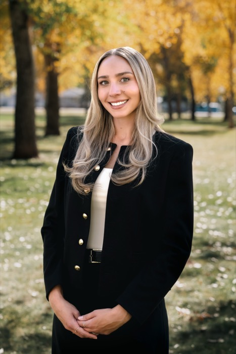

Kennedy Templeton Bio v1
Kennedy Templeton joined Rogers & Garvie, LLC as an associate in August 2026. Kennedy graduated with honors from the University of Wyoming College of Law in May 2026. She previously earned her bachelor's degree in criminal justice and history, summa cum laude, from the University of Wyoming in 2023.
During law school, Kennedy was awarded the Bernstein Scholarship, which provided her the opportunity to travel to Cambodia for two months where she worked with a non-governmental organization providing legal services to women and children. She also studied international criminal law abroad through an externship at Trinity College in Cambridge, England, and The Hague in the Netherlands.
Kennedy was the recipient of the Outstanding Student Award for the International Human Rights Clinic and served as a staff member of the Wyoming Law Review. She was also a member of the University of Wyoming's Jessup International Law Moot Court team, competing in the world's largest international moot court competition. Her practical legal experience includes serving as a judicial intern for the Honorable Misha Westby of the Second Judicial District Court of Wyoming in Albany County and as an intern with The Spence Law Firm in Jackson, Wyoming.
Kennedy is licensed to practice in the State of Wyoming and the United States District Court for the District of Wyoming.
Originally from Bakersfield, California, Kennedy now enjoys calling Wyoming home. When she's away from the office, Kennedy enjoys traveling, cooking, gardening, reading, and spending time with family and friends. She especially enjoys coaching local youth sports and watching her son play hockey. If she isn't at the rink or in the kitchen, there's a good chance she's somewhere with a book and a cup of coffee in hand.